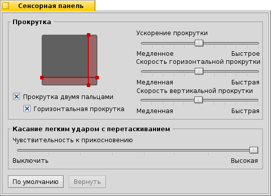

Сенсорная панель (Touchpad)
Сенсорная панель (Touchpad)
| Расположение в Deskbar: | ||
| Расположение в Tracker: | /boot/system/preferences/Touchpad | |
| Настройки хранятся по адресу: | ~/config/settings/Touchpad_settings |
Предлагает настройки сенсорной панели, которые будут полезны при использовании Haiku на ноутбуке.
Перемещая красные вертикальные или горизонтальные линии на изображении сенсорной панели, вы устанавливаете область прокрутки (выделена красным фоном). Движение вашего пальца на этой части панели соответственно переместит полосы прокрутки окна.
Справа расположены ползунки, которые устанавливают общее ускорение прокрутки, вертикальную и горизонтальную скорость прокрутки.
Настройка ускорения определяет, насколько быстрее будут пролистываться страницы, если вы быстро проведёте пальцем по области прокрутки. Скорости прокрутки управляют общей скоростью при использовании этой области при обычном движении пальца.
Под изображением сенсорной панели находятся опции для активации возможности вертикальной и горизонтальной прокрутки двумя пальцами. Двигайте двумя пальцами параллельно в вертикальной или горизонтальной плоскости для перемещения полосы прокрутки окна. Возможно, вам будет удобнее использовать один палец на левой и один на правой руке для такой прокрутки.
Если вы считаете использование этой функции удобным, то можете обойтись без установки областей прокрутки и вместо этого использовать всю площадь панели для навигации.
Внизу находится ползунок для настройки чувствительности касания. Если ваши касания продолжают игнорироваться, то увеличьте чувствительность. Если в системе постоянно срабатывают клики во время перемещения курсора мыши, то попытайтесь уменьшить её.
| сбросить текущие настройки и установить их на значения по умолчанию. | ||
| возвращает настройки, которые были активны при открытии этого окна. |
Совет, не связанный напрямую с настройками сенсорной панели, но подходящий к этой теме:
Знаете ли вы, что можно осуществить перетаскивание, используя только сенсорную панель без использования кнопок? Достаточно сделать двойной клик, не отрывая палец после второго касания. Выделенная иконка будет захвачена курсором мыши, и вы сможете тащить её, передвигая палец. Поднятие пальца прекратит перетаскивание иконки.
Если палец достиг границы сенсорной панели при перетаскивании иконки, но курсор мыши еще не достиг края экрана, то как можно продолжить перемещать иконку? Как только вы поднимите палец, иконка будет отпущена.
В зависимости от аппаратных возможностей сенсорной панели, имеется отличный способ: остановите палец, не отрывая его от края сенсорной панели - курсор мыши продолжит двигаться на автопилоте.